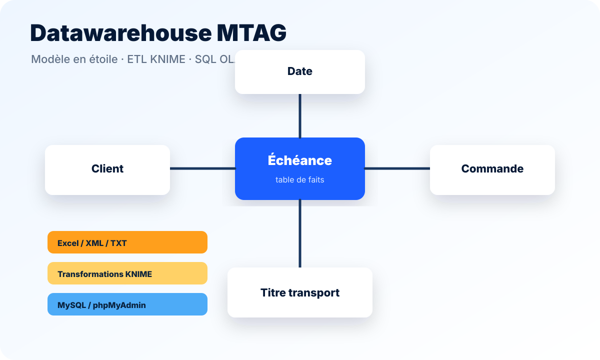
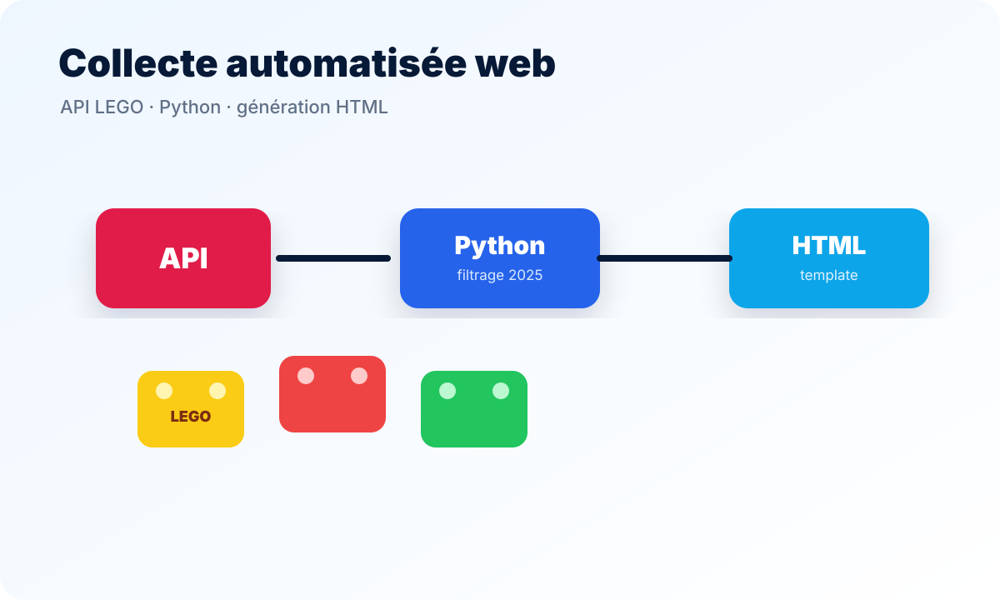
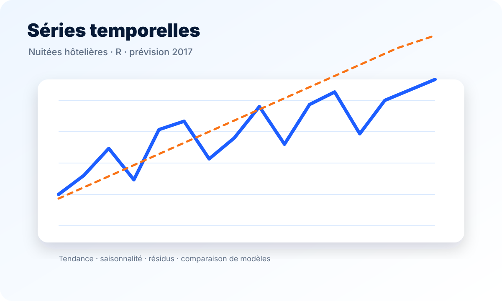
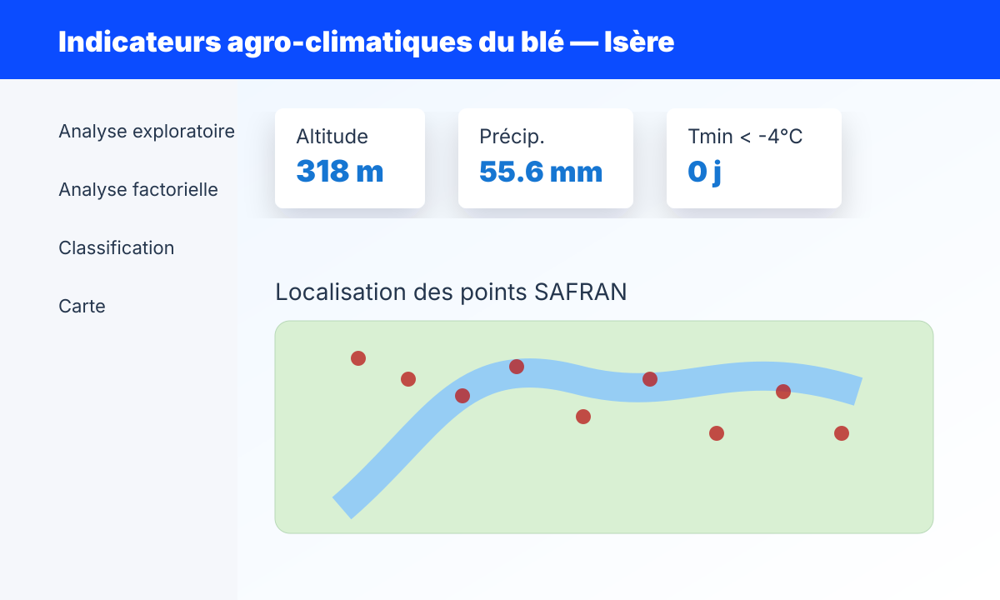
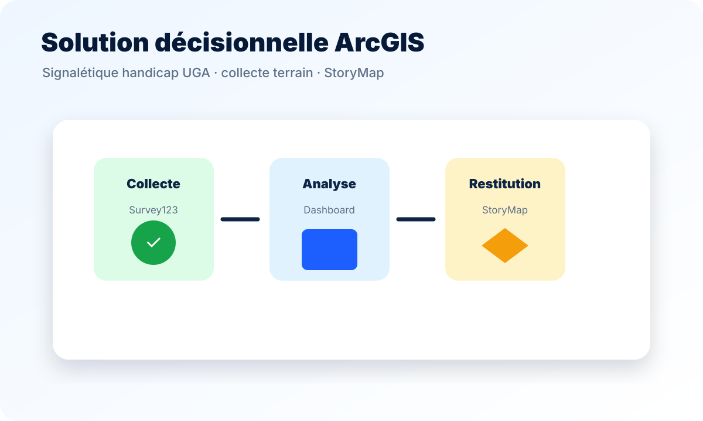
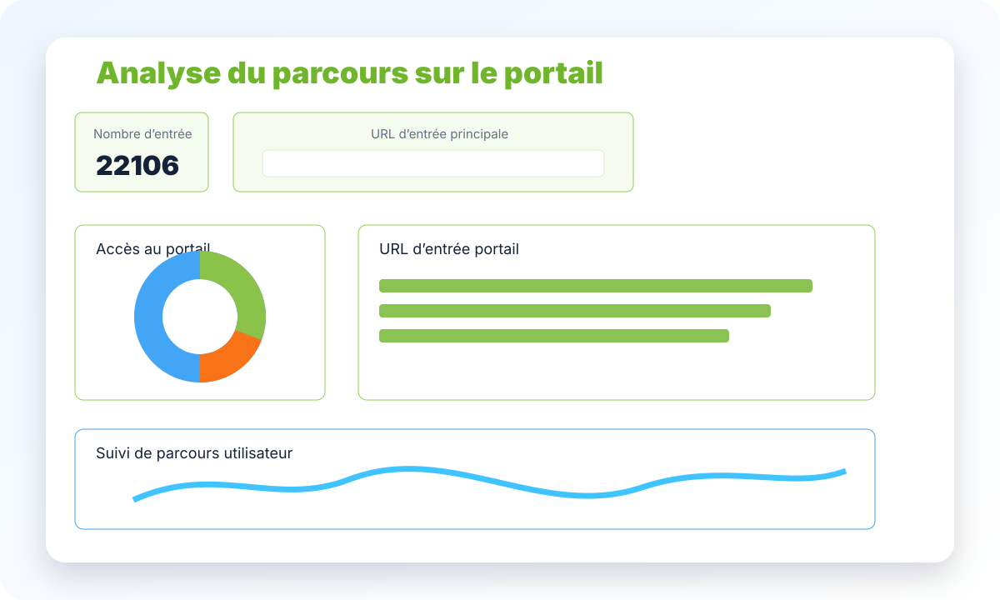

Traiter des données à des fins décisionnelles
Automatiser le traitement de données multidimensionnelles
BUT Science des Données · VCOD
Traitement, analyse, visualisation et développement d’outils décisionnels au service de la prise de décision.
Voir mes projetsData · BI · Décisionnel
Présentation
Je suis étudiant en deuxième année de BUT Science des Données, parcours Visualisation et conception d’outils décisionnels. Cette formation me permet de travailler sur l’ensemble du cycle de vie de la donnée : collecte, préparation, intégration, analyse, visualisation et restitution.
À travers mes projets universitaires et mon stage chez Micasys, j’ai développé un profil orienté Business Intelligence, analyse statistique et développement d’outils décisionnels. J’apprécie particulièrement les projets où des données brutes sont transformées en indicateurs clairs et exploitables.
Référentiel BUT SD
Clique sur une compétence pour voir sa définition, ses apprentissages critiques et les outils associés.
Automatiser le traitement de données multidimensionnelles
Mettre en œuvre une analyse exploratoire
Restituer et argumenter ses résultats
Développer un composant d’une solution décisionnelle
SAÉ & expérience professionnelle
Les visuels sont des schémas générés pour représenter la logique de chaque projet.

SAÉ 3.02
Conception d’un processus ETL sous KNIME pour intégrer des données MTAG dans un entrepôt de données et répondre à des questions métier.

SAÉ 3.VCOD.01
Récupération de données LEGO via API et scraping, structuration avec Python puis génération de pages HTML.

SAÉ 3.03
Analyse des nuitées hôtelières, décomposition de la série et prévision à court terme pour 2017.

SAÉ 4.02
Analyse spatio-temporelle des indicateurs agro-climatiques du blé en Isère avec ACP, classification et restitution RShiny.

SAÉ 4.VCOD.01
Collecte terrain et valorisation de données de signalétique handicap à l’UGA avec Survey123, Dashboard et StoryMap.

Stage — Micasys
Création d’un dashboard Power BI Portail Usager, complétée par des flux SSIS et des requêtes SQL pour répondre à des besoins clients.
Stack technique
Les outils sont regroupés par type d’usage.
Contact
eliotoulhen@gmail.com · LinkedIn : Eliot Oulhen · Grenoble / Auvergne-Rhône-Alpes